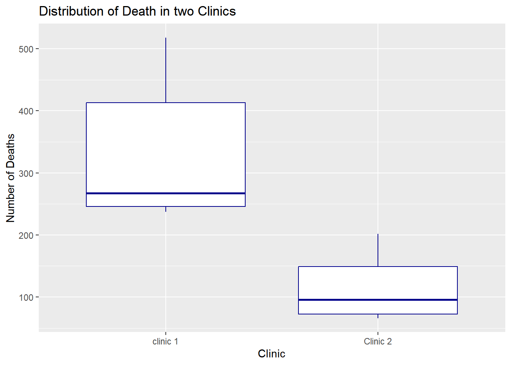
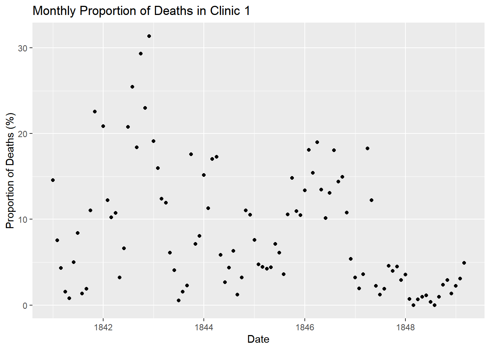

The Hungarian physician Dr. Ignaz Semmelweis was born in 1818 and worked at the Vienna General Hospital. His work on puerperal fever was of great importance. Puerperal fever is a potentially fatal disease that affects women after childbirth. In the early 1840s, around 10% of women who had given birth at the Vienna General Hospital died from this disease. Dr. Semmelweis discovered the cause of puerperal fever: contaminated hands of doctors who attended women during childbirth. However, his discovery was not accepted for many years.
Observing the situation
Let’s reanalyze the data that led Dr. Semmelweis to discover the importance of handwashing.
# Loading the tidyverse packagelibrary(tidyverse)
Warning: package 'tidyverse' was built under R version 4.4.3
Warning: package 'ggplot2' was built under R version 4.4.3
Warning: package 'tibble' was built under R version 4.4.3
Warning: package 'tidyr' was built under R version 4.4.3
Warning: package 'readr' was built under R version 4.4.3
Warning: package 'purrr' was built under R version 4.4.3
Warning: package 'dplyr' was built under R version 4.4.3
Warning: package 'stringr' was built under R version 4.4.3
Warning: package 'forcats' was built under R version 4.4.3
Warning: package 'lubridate' was built under R version 4.4.3
# Reading the dataset about annual deaths and saving it in the data_death objectdata_death <-read_csv("mortes_anuais_clinica.csv")# Renaming the columnsdata_death <- data_death %>%rename(year = ano,births = nascimentos,death = mortes,clinical = clinica )#Renaming some values data_death <- data_death %>%mutate(clinical =recode( clinical,"clinica 1"="clinic 1","clinica 2"="Clinic 2" ) )# Printing the datasetdata_death
The dataset data_death shows the number of childbirths in two clinics at the Vienna General Hospital between 1841 and 1846. We can observe a high number of women who died during childbirth, many of them due to puerperal fever.
To better understand the situation, we will add a new column to the dataset with the proportion of deaths per year in each clinic.
Compare a situação entre as duas clínicas usando estatísticas sumárias e/ou gráficos que achar relevantes. Explique exatamente o que você está comparando (qual a variável utilizada?).
ggplot(data_death, aes(y=death, x=clinical)) +geom_boxplot(colour ="darkblue") +labs(title ="Distribution of Death in two Clinics",x ="Clinic",y ="Number of Deaths" )

As observed in the graph, there is a difference between the medians of Clinic 1 and Clinic 2. Clinic 1 exhibits a higher median than Clinic 2, which suggests that Clinic 1 records a greater number of deaths. Furthermore, the minimum number of deaths in Clinic 1 exceeds the maximum value observed in Clinic 2, providing additional evidence that Clinic 1 has a higher mortality rate than Clinic 2.
Buscando por uma explicação e propondo uma intervenção
Dr. Semmelweis observed a pattern in these data and became concerned. The only difference between the two clinics was that, in Clinic 1, medical students attended the deliveries, whereas in Clinic 2 midwives attended the women. While the midwives worked exclusively with childbirth, the students also performed autopsies.
Semmelweis began to suspect that something in the autopsy room was influencing the mortality rate. His primary hypothesis was that some form of contaminating agent was being transmitted on the hands of the students, causing puerperal fever. In an attempt to reduce the high mortality rate, he instructed all staff to wash their hands. At the time, however, this measure was highly controversial, since the scientific knowledge of the period did not yet include an understanding of bacteria.
# Reading the monthly deaths data for Clinic 1month <-read_csv("mortes_mensais.csv")# Renaming the columnsmonth <- month %>%rename(date = data,births = nascimentos,death = mortes )# Adding the percentage of deaths relative to birthsmonth <- month %>%mutate(proportion = death *100/ births)# Printing the first observations of the data sethead(month)
The proportion of deaths over time is analysed through the following plot:
ggplot(month, aes(x = date, y = proportion)) +geom_point() +labs(title ="Monthly Proportion of Deaths in Clinic 1",x ="Date",y ="Proportion of Deaths (%)" )

The plot provides an indication of when the order to wash hands was implemented. The change occurred in the summer of 1847.
# Date of the start of the order Handwashingstart_handwashing =as.Date('1847-06-01')
# Creating a binary column indicating whether the date falls on or after# the handwashing order (FALSE = before the order, TRUE = on or after)month <- month %>%mutate(order_handwash = date >= start_handwashing)
Let’s plot a new line graph to better compare the monthly proportion of the data before and after the handwashing order
#Line Plot ggplot(month, aes(x = date, y = proportion, group = order_handwash, colour = order_handwash)) +geom_line() +geom_point() +# Changing the labels in the legendscale_color_discrete(labels =c("FALSE"="Before", "TRUE"="After")) +labs(title ="Monthly Proportion of Deaths in Clinic 1",x ="Date",y ="Proportion of Deaths (%)",colour ="Handwashing Order in Effect" )
# Number of months in which the handwashing order was not yet in effectcount_months_no_order <-function(x) {sum(x ==FALSE)}months_no_order <-count_months_no_order(month$order_handwash)
# Mean proportion of deaths in the period before the handwashing ordermean_proportion_death_no_handwash <-mean(month$proportion[month$order_handwash ==FALSE])mean_proportion_death_no_handwash
[1] 10.505
# Number of months in which the handwashing order was in effectmonths_yes_order <-as.numeric(sum(month$order_handwash))months_yes_order
[1] 22
# Mean proportion of deaths in the period after the handwashing ordermean_proportion_death_yes_handwash <-mean(month$proportion[month$order_handwash ==TRUE])mean_proportion_death_yes_handwash
[1] 2.109338
Comparing the situation, focusing on the proportion of death between wahs or not wahse order. Compare a situação, com relação à proporção de mortes, entre as duas situações (lavar ou não as mãos) usando um boxplot e estatísticas sumárias que achar relevantes.
ggplot(month, aes(y=proportion, x=order_handwash, color=order_handwash))+geom_boxplot() +# Changing the labels on the x-axisscale_x_discrete(labels =c("FALSE"="Before", "TRUE"="After")) +# Changing the labels in the legendscale_color_discrete(labels =c("FALSE"="Before", "TRUE"="After")) +labs(title ="Distribution of Death Monthly in Clinic 1 ",x ="Date",y ="Proportion of Deaths (%)",colour ="Handwashing Order in Effect" )
# Calculating the median of the proportion of deathsmedian_proportion_death_no_handwash <-median(month$proportion[month$order_handwash ==FALSE])median_proportion_death_yes_handwash <-median(month$proportion[month$order_handwash ==TRUE])
#Calculating the mode of the distribution# Function to calculate the mode using Czuber's formula# Mo = L + [d1 / (d1 + d2)] * hmodal_czuber <-function(x) { x <-na.omit(x) # remove NA h <-hist(x, plot =FALSE) # create the classes (bins) counts <- h$counts i <-which.max(counts) # modal class position L <- h$breaks[i] # lower limit of the modal class width <- h$breaks[i +1] - h$breaks[i] # class width (h) f_prev <-if (i ==1) 0else counts[i -1] # previous class frequency f_next <-if (i ==length(counts)) 0else counts[i +1] # next class frequency d1 <- counts[i] - f_prev # modal minus previous d2 <- counts[i] - f_next # modal minus next L + (d1 / (d1 + d2)) * width # Czuber's formula}# Mode with handwashingmode_proportion_death_yes_handwash <-modal_czuber(month$proportion[month$order_handwash ==TRUE])# Mode without handwashingmode_proportion_death_no_handwash <-modal_czuber(month$proportion[month$order_handwash ==FALSE])
According to the statistical summary of the monthly proportion of deaths in Clinic 1, the period before the handwashing order had a mean =10.5049983, a median = 10.5168832, and a mode = 3.3823529. In the period after the order, the mean was 2.1093375, the median was 2.063595, and the mode was 0.7. Although the modes of the two distributions are similar, the mean differs by 8.3956608 percentage points and the median by 8.4532882 percentage points. Both measures differ by approximately 8 percentage points between the periods. Furthermore, the boxplot shows that the distribution before the order was highly dispersed and positively skewed.
Testing Hyphotesis
Despite the marked decrease in the proportion of deaths observed after the students began washing their hands, Dr. Semmelweis was met with disbelief. At the time, he did not have the statistical tools needed to defend his position. In this study, we use a hypothesis test to draw conclusions from the data.
The mean proportion of deaths differs between the two periods (before and after the handwashing order). Can this difference be attributed to handwashing, or could it plausibly arise by chance alone, even if handwashing had no practical effect? To address this question, we adopt as the null hypothesis (H0) that handwashing has no effect on the proportion of deaths, and we assess how likely a difference as large as the one observed would be under that assumption. If this probability is very small, we have evidence against H0 and in favor of an effect of handwashing.